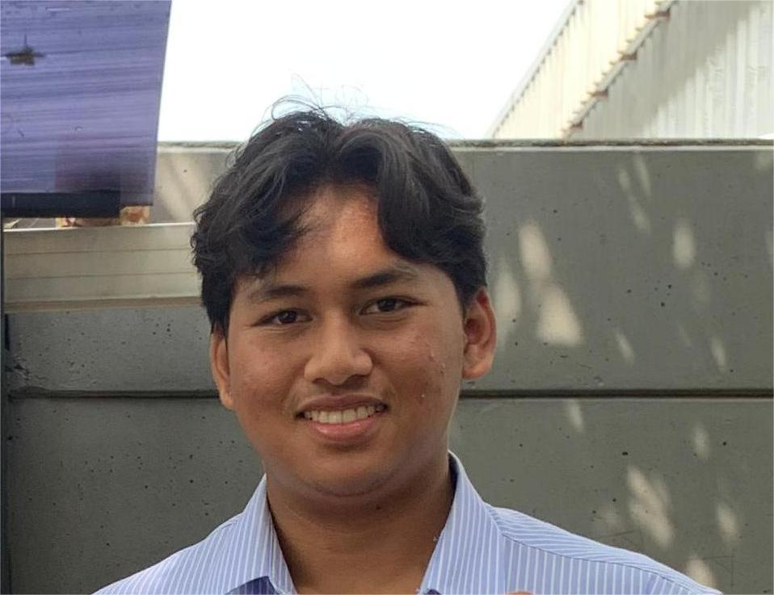

Jefta Arya Mukti
Welcome to my portfolio
Welcome to my portfolio
Hello! I’m Jefta Arya Mukti, a passionate and dedicated software developer with a strong background in web development and programming. I graduated from SMK Tunas Media with a major in Rekayasa Perangkat Lunak (Software Engineering) in 2024. During my time at school, I had the opportunity to work on a variety of projects and gain hands-on experience that has shaped my skills and interests.


SMK Tunas Media
*Rekayasa Perangkat Lunak (Software Engineering)*
*2021 - 2024*
During my time at SMK Tunas Media, I focused on software engineering and gained comprehensive knowledge in programming and web development. My education included: